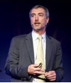

Scott Gray
When I think of Scott "Nadi" Gray, I think of a nearly unstoppable force. To envision Scott is to see a living landscape, full of lush color, sound and movement, framed with silence and stillness. Many people spend a lifetime trying to figure out how to really live, but “Nadi,” as many friends call him, has not only figured out how to confront his fears and live fully, but also how to do so with love. He openly embraces strangers as if they are a close friend, like family, and is remarkably open about his life with them. Wherever he goes, he creates a perpetual path of energy, makes strangers or friends feel at ease, lifts them up, and challenges them to embrace each day with purpose. Nadi’s vision of the world has been shaped by many factors, including his four amazing sons, a rare connection with nature, his fair share of setbacks, and international travel to 50 countries as a boy and through his career with GS1.org (not-for-profit with affiliates in 111 countries). His encounters with people all over the world molded his dream for imagine1.org, a place where we could stop to imagine what he has been so blessed to experience. Nadi loves exploring the world and spends a great deal of his life in nature. He brings the wonder of his life and travels to his friends via poetry, philosophy, and meditations (friend “Nadi Gray” on Facebook if you like that kind of thing). Combined, he represents movement and power, as well as stillness and reflection--very similar to the power of a beautiful landscape caught in a single moment of life. Nadi, unlike any person I've ever met, has the uncanny ability to project the beauty of life through his being and through the love of his children, the collective human family, and nature. For that, we should all be as grateful for him as he is for us. : )